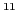

This input format is only for expressing Disjunctive Normal Form or ``sum of products'' formulas. Variables are represented as positive integers. All top-level Boolean functions are conjunctions, called terms. There is one term per line of file. A solution to the problem defined in a file is an assignment satisfying at least one term. There are no manipulators or directives in this format. This format is similar to the well-known DIMACS format. Internally, DNF problems are transformed to CNF then solved as CNF problems.